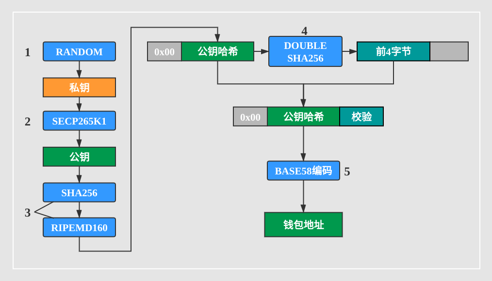
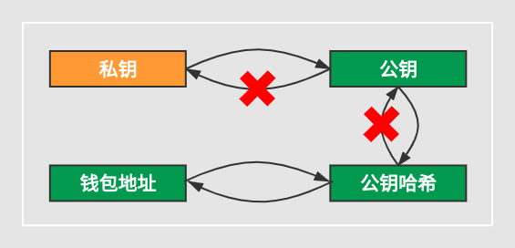
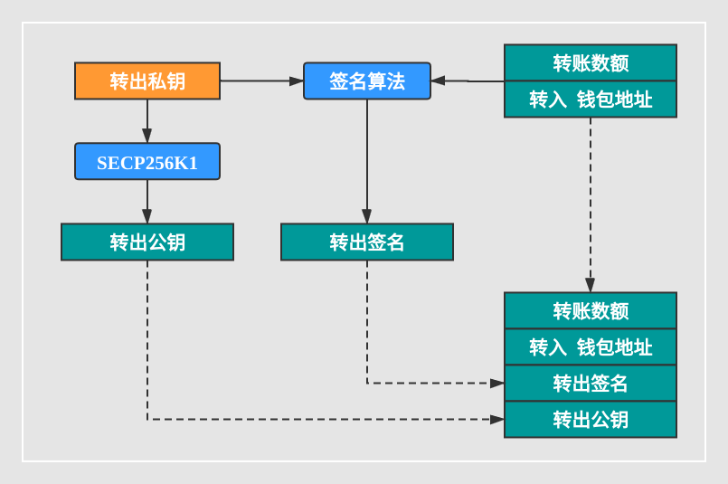
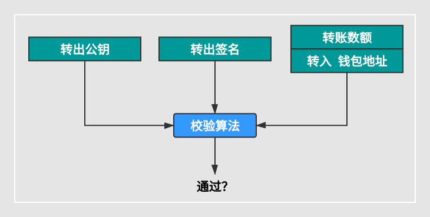
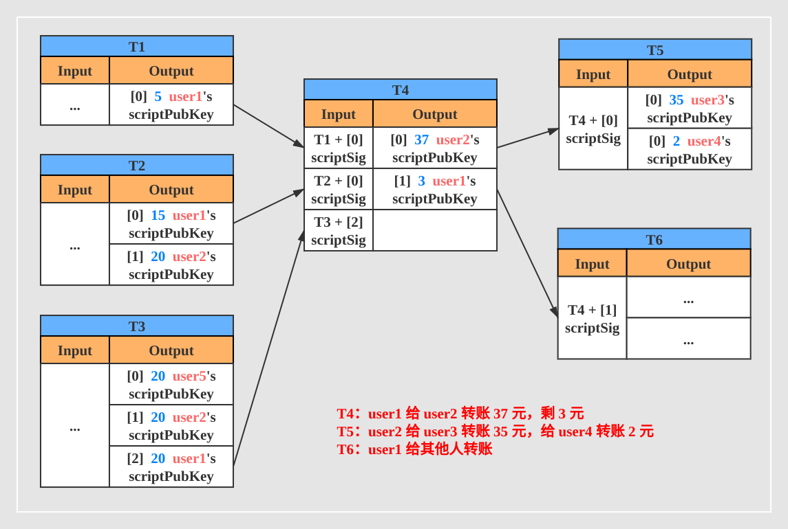

比特币
什么是比特币？
比特币是建立在计算机科学、密码学和经济学的基础上并采用共识机制实现的一套去中心化的数字货币系统
与传统货币的区别
传统货币：
- 由政府授权的银行、支付平台集中进行管理
- 身份管理
- 在相应银行建立账户，包括个人信息、账户信息
- 服务
- 提供转账和支付服务
- 交易记录管理
- 跟踪账户交易记录并为第三方提供审计服务
- 信任
- 由政府进行授权许可
比特币：
- 依托分布式网络，没有集中管理机构
- 通过计算机科学、数学和密码学原理保证交易成功
- 通过 POW （Proof of work）工作量证明共识机制对比特币的价格进行背书
- 货币的发行通过比特币协议规定，总量固定，并且随着时间发行的数量递减
比特币身份管理
- 以地址形式存在的账户，该账户能够拥有、转出和转入比特币
- 比特币网络中的地址是一个 $2^{160}$ 的数字地址，可以确保任意两个账户不会重复
- 通过公钥和私钥标识一个唯一的身份
- 私钥随机生成
- 公钥根据私钥生成
- 公钥是交易方对外公布的地址，用于接受转入
- 私钥用于支付
钱包地址生成
- 随机生成一个私钥
- 私钥经过 SECP265K1 算法（一种椭圆曲线算法）生成公钥
- SHA256 和 RIPEMD160 都是一种 Hash 算法
- 将地址版本号
0x00与经过 Hash 算法后得到的公钥哈希连在一起，对其进行两次 SHA256 运算，取结果的前4字节作为公钥哈希的校验值，连接在尾部 - 将上一步结果使用 BASE58（比特币定制版本） 进行编码，得到钱包地址，如 1A1zP1eP5QGefi2DMPTfTL5SLmv7DivfNa
公私钥关系
私钥签名
该 “转出私钥” 是生成钱包地址中第一步生成的私钥还是临时生成的私钥？
“转出公钥” 是否为生成钱包地址中的公钥？
公钥验签
根据数字签名的原理，在签名算法处使用转出私钥对数据的摘要进行签名，验签时使用使用转出公钥解码转出签名并将得到的摘要与接收方收到的数据生成的摘要进行对比以验签。
UTXO
UTXO 全称 Unspent Transaction Outputs，即未花费的交易输出。
比特币实现安全可靠的转账服务，需要满足下列条件：
- 身份证明
- 足够的余额
- 余额不被其他交易使用
比特币网络中的每个账户都拥有一组 UTXOs，每个 UTXO 都是不可分割的，并且每个 UTXO 有且仅有可能被 1 个交易花费 1 次。
UTXO小结
- 一个区块链有多个区块
- 一个区块有多笔交易（两三千笔）
- 每笔交易，多笔 Input，多笔 Output
- 任何一笔 Transaction，会花费多个 UTXO(Input)，同时也产生多个 UTXO(Output)，属于多个不同的收款人
- 1个UTXO = 1个 Transaction ID + Output Index
- 旧的 UTXO 不断消亡，新的 UTXO 不断产生，所有的 UTXO 组成了 UTXO Set 的数据库，存在于每个节点
- 任何一笔 UTXO，有且仅有可能被一个交易花费一次
比特币钱包
- 某个人的钱包余额 = 属于他的 UTXO 的总和
- 在比特币系统中，存的是一笔笔交易，也就是一笔笔的 UTXO，每个账户的余额是通过 UTXO 计算出来的，而不是直接存储余额